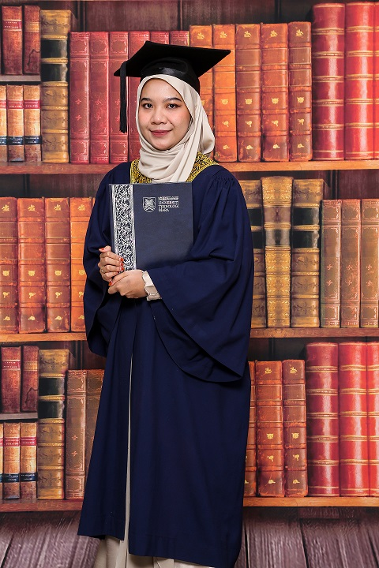

|  | ||
| Name | Fatin Munira Bt Sarbini | |
|---|---|---|
| Date of Birth | 10 May 2000 | |
| Place of Birth | Hospital Angkatan Tentera, Lumut | |
| Hobbies | Dance, workout, watching netflix | |
| Height | 165cm | |
| Race | Melayu | |
| Blood Group | O | |
| Gender | Female | |
| Fav drink | milo, tea c special, green tea | |
| Fav food | Sushi | |
Assalamualaikum. My name is Fatin Munira binti Sarbini, and I'm from the Faculty of Information Management. I am 21 years old this year, and everyone, including my family and friends, calls me "Atin." Some friends also prefer to call me "Mun." I was born on May 10, 2000, at Hospital Angkatan Tentera, Lumut, Perak. My favorite food is sushi, a famous dish from Japan. For drinks, I usually enjoy Milo, green tea, and Teh C special. In my free time, I indulge in hobbies like watching Netflix, listening to my favorite songs, and dancing. I love to travel; during my childhood, I had the opportunity to explore various parts of Malaysia. In the future, I aspire to travel abroad if I am blessed with opportunities and a successful career. I once dreamed of becoming a military officer to continue my father's legacy and am also interested in starting a business with my friend. I am the first child among my four siblings. My mother gave birth to two daughters and two sons. The second child in our family is Muhammad Zufikrie bin Sarbini, born in 2004, followed by my younger brother, Muhammad Danial Bin Sarbini, born in 2009. Lastly, my mother gave birth to a very cute little girl named Fatin Nabila Binti Sarbini in 2011, who is also my youngest sister.